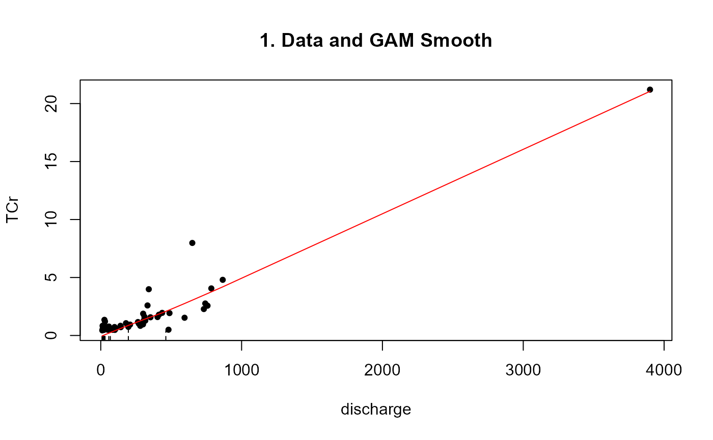
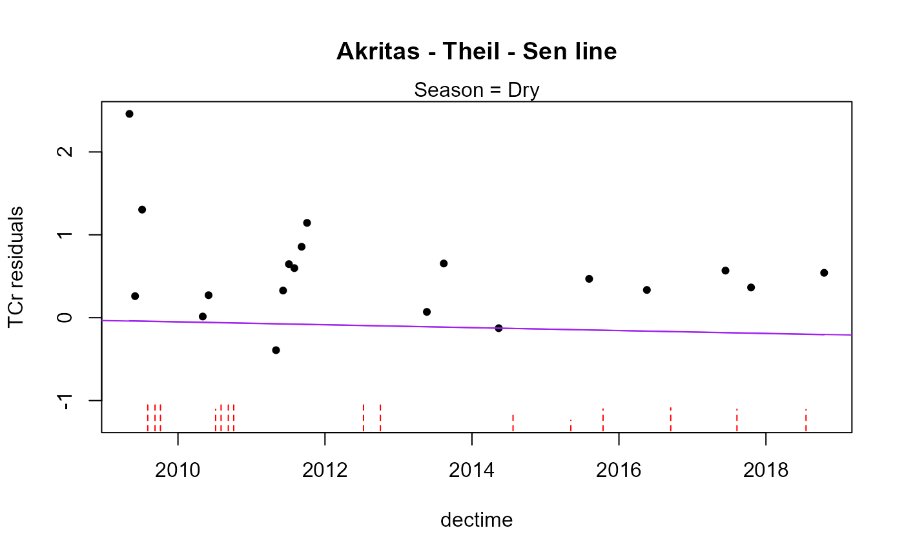
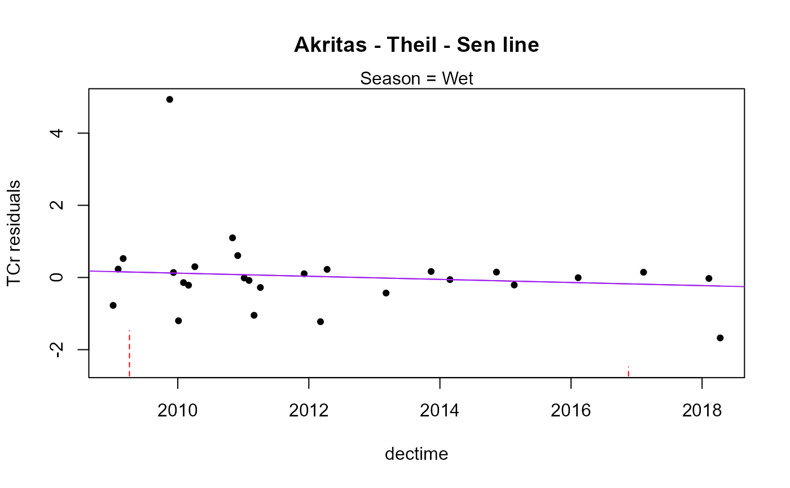
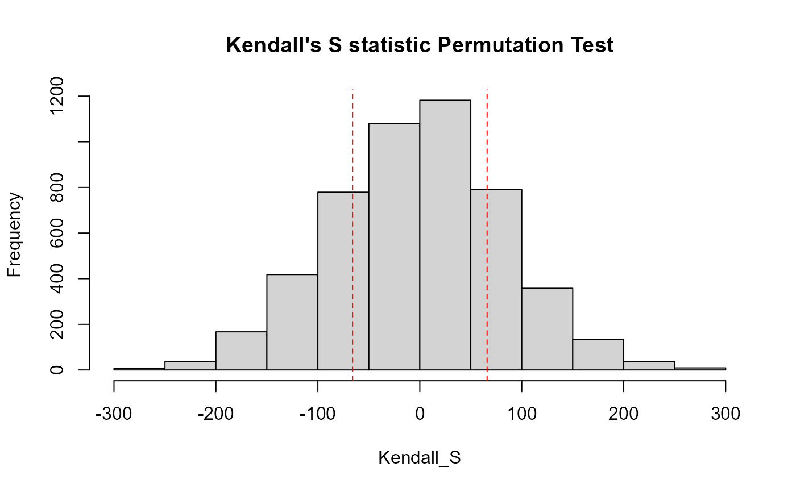
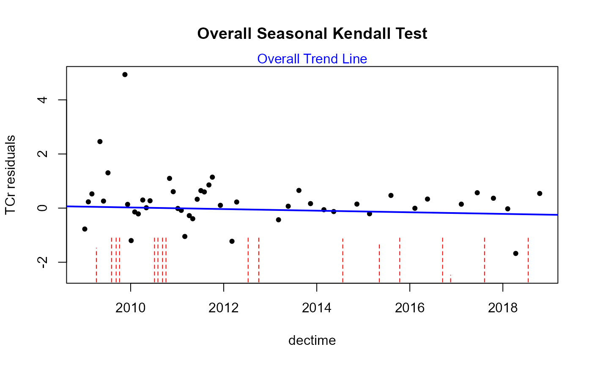

R/centrendsea.R
centrendsea.RdComputes the Seasonal Kendall trend test for censored data after adjustment of censored data for a covariate. The adjustment is by subtracting off a censored GAM smooth, removing the effect of the covariate. Trend analysis is performed on the residuals from the GAM smooth.
centrendsea(
y.var,
y.cens,
x.var,
time.var,
season,
R = 4999,
nmin = 4,
link = "identity",
Smooth = "cs",
printstat = TRUE,
seaplots = TRUE
)The column of y (response variable) values plus detection limits
The column of indicators, where 1 (or TRUE) indicates a detectionlimit in the y.var column, and 0 (or FALSE) indicates a detected value in y.var.
Column of a covariate (not time). y.var will be smoothed versus x.var and residuals taken to subtract out the relationship between y and x.
Column of the numerical time variable, either a sequence of numbered days or decimal times, etc. Will be the scale used for time in ATS trend analysis.
Column of the seasonal variable. Usually a text variable but may be numeric. Will be converted to a factor..
The number of repetitions in the permutation process. R is often between 999 and 9999 (adding +1 to represent the observed test statistic produces 1000 to 10000 repetitions). By default R=4999. Increasing R results in lower variation in the p-values produced between runs.
The minimum number of observations needed for the entire time period to be tested, per season. For example, with 1 sample per year per season over an 8-year period, you have 8 observations for each season. You can increase this number if you want a higher minimum. Don’t decrease it below the default of 4. If there are fewer than nmin values that season is skipped and not included in the overall test and a note of this will be printed in the console.
Default = "identity" which means it uses data in the original units. See details.
Type of smoother used in the GAM. Default is "cs", shrinkage cubic regression splines. See details for other options.
Logical TRUE/FALSE option of whether to print the resulting statistics in the console window, or not. Default is TRUE.
logical 'TRUE'/'FALSE' option to print plots with trend line for each season. Default is 'TRUE'.
Prints four plots: 1. Y data vs X covariate with GAM Smooth, 2. Residuals from GAM Smooth vs X covariate, 3. histogram of the SK test results illlustrating the p-value, and 4. Seasonal Kendall trend line of residuals vs time. Plots of data and SK trend line for each season are produced when the seaplots option is TRUE.
Returns the seasonal Kendall trend test results on residuals (intercept, slope, Kendall's tau, p-value for trend)
Default link = identity. The y variables are then used in their original units. Other options are available see cenGAM::tobit1 for more options.
Default Smooth is "cs" for shrinkage cubic regression splines. See mgcv::smooth.terms for other types of smoothing algorithms. '"ts"' is a thin-plate regression spline and is also commonly used.
As with the censeaken function, observations are not edited when there are more data in some seasons than others. Seasons with more data will have more influence on the overall SK test than seasons with fewer data. To avoid this (as done with some Seasonal Kendall software) data in the seasons with more can be selectively deleted to better match the data frequency of the seasons with fewer data.
Helsel, D.R., 2011. Statistics for censored environmental data using Minitab and R, 2nd ed. John Wiley & Sons, USA, N.J.
data(Gales_Creek)
with(Gales_Creek,centrendsea(TCr,CrND,discharge,dectime,Season))

#>
#> Trend analysis by Season of: TCr adjusted for discharge
#> ----------

#> Season N S tau pval Intercept slope
#> 1 Dry 34 -8 -0.0143 0.91638 34.52 -0.0172
#> ----------

#> Season N S tau pval Intercept slope
#> 1 Wet 29 -58 -0.143 0.28481 86.864 -0.04316
#> ----------
#> Seasonal Kendall test and Akritas-Theil-Sen line on residuals

#> reps_R N S_SK tau_SK pval intercept slope
#> 1 4999 63 -66 -0.0683 0.4288 59.654 -0.02967
#> ----------
